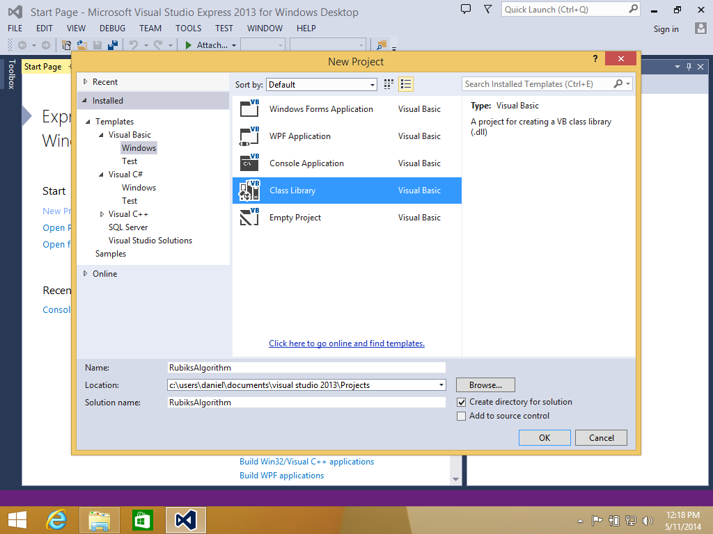
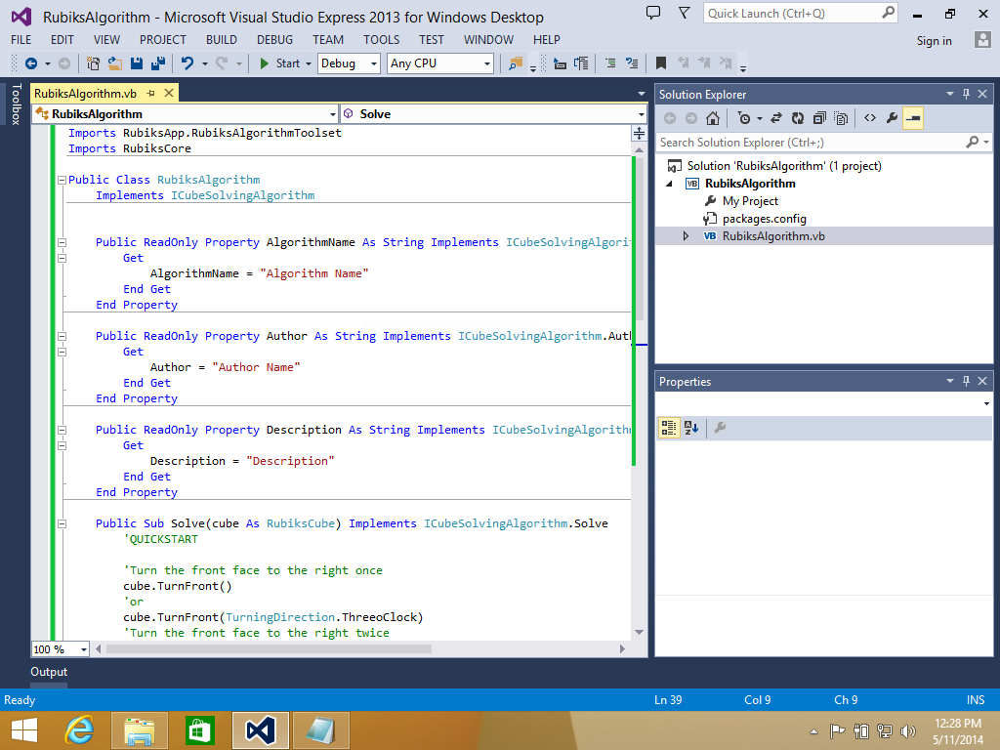

Imports RubiksApp.RubiksAlgorithmToolset
Imports RubiksCore
Public Class RubiksAlgorithm
Implements ICubeSolvingAlgorithm
Public ReadOnly Property AlgorithmName As String Implements ICubeSolvingAlgorithm.AlgorithmName
Get
AlgorithmName = "Algorithm Name"
End Get
End Property
Public ReadOnly Property Author As String Implements ICubeSolvingAlgorithm.Author
Get
Author = "Author Name"
End Get
End Property
Public ReadOnly Property Description As String Implements ICubeSolvingAlgorithm.Description
Get
Description = "Description"
End Get
End Property
Public Sub Solve(cube As RubiksCube) Implements ICubeSolvingAlgorithm.Solve
'QUICKSTART
'Turn the front face to the right once
cube.TurnFront()
'or
cube.TurnFront(TurningDirection.ThreeoClock)
'Turn the front face to the right twice
cube.TurnFront(TurningDirection.SixoClock)
'Turn the front face to the right three times
cube.TurnFront(TurningDirection.NineoClock)
'Turn the front face to the right once, two layers deep
cube.TurnFront(TurningDirection.ThreeoClock, 2)
'Turn the back face to the left once
cube.TurnBack()
'or
cube.TurnBack(TurningDirection.ThreeoClock)
'Turn the back face to the left twice
cube.TurnBack(TurningDirection.SixoClock)
'Turn the back face to the left three times
cube.TurnBack(TurningDirection.NineoClock)
'Turn the back face to the left once, two layers deep
cube.TurnBack(TurningDirection.ThreeoClock, 2)
'Turn the front face to the right once
cube.Turn(RubiksDirection.Front)
'or
cube.Turn(RubiksDirection.Front, TurningDirection.ThreeoClock)
'Turn the front face to the right twice
cube.Turn(RubiksDirection.Front, TurningDirection.SixoClock)
'Turn the front face to the right three times
cube.Turn(RubiksDirection.Front, TurningDirection.NineoClock)
'Turn the front face to the right once, two layers deep
cube.Turn(RubiksDirection.Front, TurningDirection.ThreeoClock, 2)
End Sub
End Class
